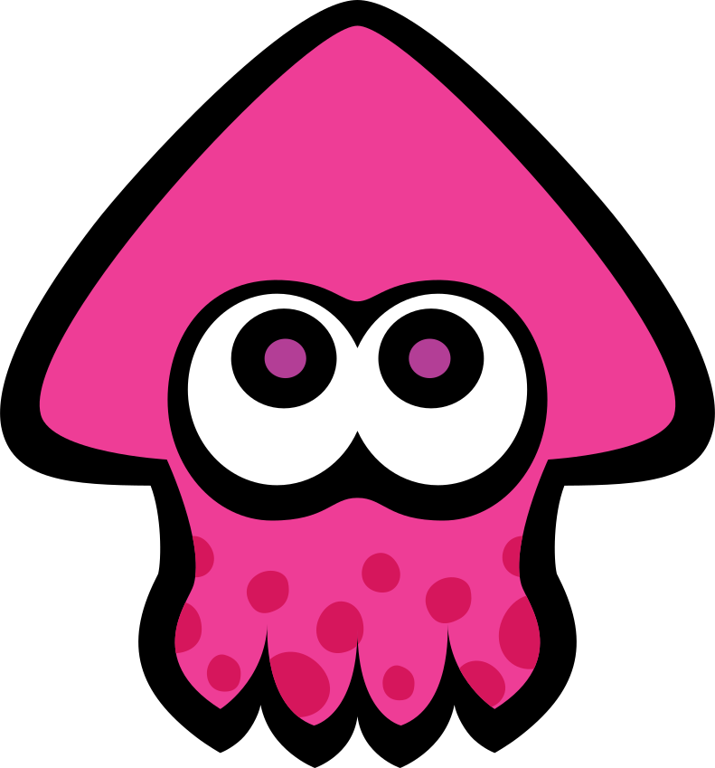
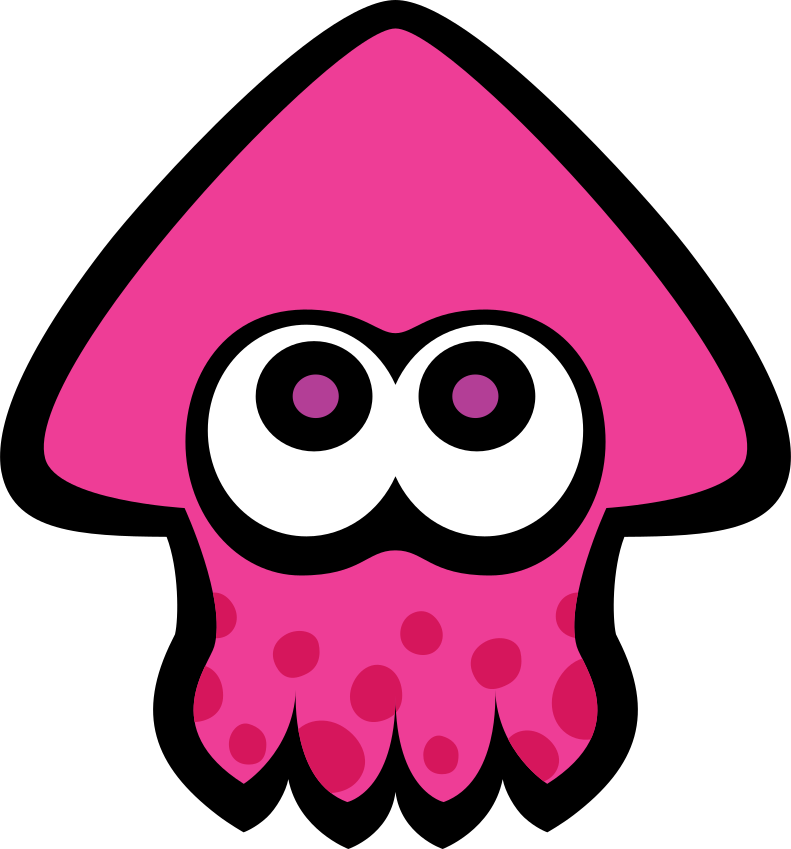
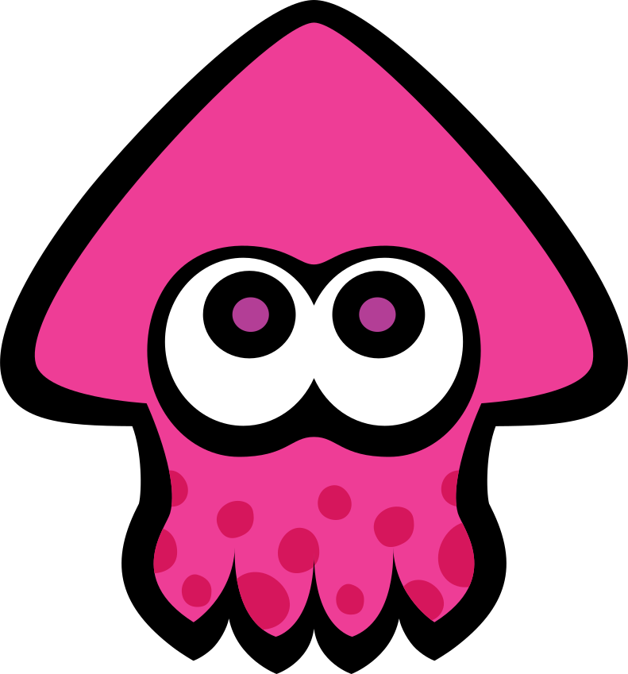

Hylian heroes have incredible resistance and stamina. You would think they have several hearts! With the Master Sword (optional) there is nothing they cannot cut through.
Your average hero is a dull barabarian that keeps bragging about his kill count, even more so after chugging half a barrel of beer...Hylians heroes are notoriously silent. They will wipe out foes and save the day swiftly without boring you with endless bragging.
Rescuing princesses requires more than brute force. Evil warlords are fond of magic barriers, elaborate traps and all other kinds of riddles that can't be solved by cutting through with a sword. Or an axe. Luckily, the Master Sword is not the only tool available to the Hylian Hero: Bombs, arrows, boomerangs, Pegasus boots and even magic wands enable them to solve any kind of riddle.
Since 2017, the Hylian Hero is more than a simple combattant. Unique cooking skill allow them to creat mouth-watering meals from almost anything they pick up in during their adventures.
